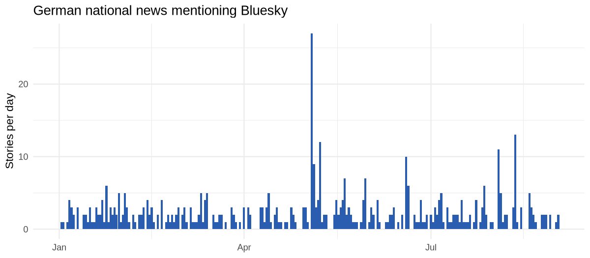
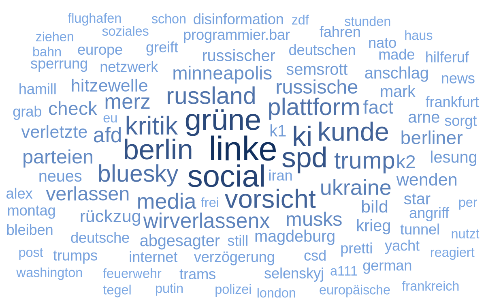

The goal of mediacloud2 is to make the Media Cloud news archive usable from R. Media Cloud collects online news from tens of thousands of outlets worldwide and lets you search that archive by keyword, outlet, country and date. The package wraps version 4 of the Media Cloud API, which replaced the retired v2 API that older R clients were written against.
Everything the package returns is a tibble, so results go straight into your usual data wrangling and plotting code.
Installation
You can install the development version of mediacloud2 like so:
pak::pak("https://github.com/JBGruber/mediacloud2")Basic Usage
Authentication
To use the MediaCloud API, you first need to obtain a token. Head to https://search.mediacloud.org/account and create an account, if you do not have one already, then create a token. Or you skip that step and run mc_auth() directly:
This will open the URL you need and ask you to enter the token. This way, the token doesn’t show up in your R history or anywhere else. After you have done this once, the package will never ask you again to authenticate, unless you change computers or delete the cache directory. You can learn more about the function with ?mc_auth().
Finding Sources
Media Cloud sorts the outlets it archives into sources – one per domain – and collections, which are named groups of sources, mostly countries and regions. Every search runs against at least one of the two, so this is where you normally start.
To find an individual source, search for its name:
spiegel <- mc_sources(name = "spiegel")
spiegel[, c("id", "name", "stories_per_week", "primary_language")]
#> # A tibble: 62 × 4
#> id name stories_per_week primary_language
#> <int> <chr> <int> <chr>
#> 1 39206 tagesspiegel.de 1728 de
#> 2 19831 spiegel.de 718 de
#> 3 1129976 anti-spiegel.ru 0 <NA>
#> 4 523968 zeitenspiegel.de 0 <NA>
#> 5 1699130 drspiegel.com 0 <NA>
#> 6 520679 spiegelkritik.de 0 <NA>
#> 7 1213090 marktspiegel-verlag.de 0 <NA>
#> 8 1635799 spiegeltenthobart.com 0 <NA>
#> 9 881647 wochenendspiegel.de 0 <NA>
#> 10 1635743 spiegeltentnewcastle.com 0 <NA>
#> # ℹ 52 more rowsSearching for a country instead gives you the collections it is covered by:
mc_find_collections("Germany")
#> # A tibble: 20 × 4
#> id name source_count monitored
#> <int> <chr> <int> <lgl>
#> 1 38379816 Germany - State & Local 266 TRUE
#> 2 34412409 Germany - National 61 TRUE
#> 3 38379817 Nordrhein-Westfalen, Germany - State & Local 61 TRUE
#> 4 262985213 Germany - National (Media Impact Monitor Te… 60 FALSE
#> 5 262985211 Germany - National (Research Only) 59 FALSE
#> 6 38379831 Niedersachsen, Germany - State & Local 46 TRUE
#> 7 38379825 Bayern, Germany - State & Local 39 TRUE
#> 8 38379823 Berlin, Germany - State & Local 36 TRUE
#> 9 38379821 Hessen, Germany - State & Local 27 TRUE
#> 10 38379827 Brandenburg, Germany - State & Local 17 TRUE
#> 11 38379819 Hamburg, Germany - State & Local 15 TRUE
#> 12 262985085 Baden-Württemberg, Germany - State & Local 12 TRUE
#> 13 38379837 Sachsen, Germany - State & Local 10 TRUE
#> 14 38379833 Rheinland-Pfalz, Germany - State & Local 9 TRUE
#> 15 38379841 Schleswig-Holstein, Germany - State & Local 7 TRUE
#> 16 38379843 Thüringen, Germany - State & Local 5 TRUE
#> 17 38379839 Sachsen-Anhalt, Germany - State & Local 5 TRUE
#> 18 262985084 Mecklenburg-Vorpommern, Germany - State & L… 3 TRUE
#> 19 38379829 Bremen, Germany - State & Local 3 TRUE
#> 20 38379835 Saarland, Germany - State & Local 1 TRUE"Germany - National" is the one you usually want. Its id, 34412409, is what the search functions below take, but you can also ask for the sources it contains:
sources_de <- mc_collection_sources("Germany - National")
sources_de[, c("id", "name", "stories_per_week", "last_story")]
#> # A tibble: 61 × 4
#> id name stories_per_week last_story
#> <int> <chr> <int> <date>
#> 1 20453 welt.de 3756 2026-09-01
#> 2 22009 bild.de 2113 2026-09-01
#> 3 266951 dw.com 2100 2026-09-01
#> 4 22119 zeit.de 2043 2026-09-01
#> 5 23538 n-tv.de 1736 2026-09-01
#> 6 39206 tagesspiegel.de 1728 2026-09-01
#> 7 19972 focus.de 1361 2026-09-01
#> 8 22310 handelsblatt.com 1036 2026-09-01
#> 9 40762 t-online.de 962 2026-09-01
#> 10 179736 rtl.de 918 2026-09-01
#> # ℹ 51 more rowsGetting News Items
mc_story_list() returns the stories matching a query. The query goes to Elasticsearch, so the usual AND/OR/NOT operators, quoted phrases and wildcards all work. Search terms are always paired with a date range and with at least one collection or source:
stories <- mc_story_list(
"bluesky",
start_date = "2026-01-01",
end_date = "2026-09-01",
collection_id = 34412409
)
stories
#> # A tibble: 476 × 8
#> id indexed_date language media_name media_url publish_date title
#> <chr> <dttm> <chr> <chr> <chr> <date> <chr>
#> 1 7dd1e44… 2026-09-01 16:25:57 de taz.de taz.de 2026-09-01 "Erf…
#> 2 ac843d6… 2026-09-01 08:27:06 de tagesspie… tagesspi… 2026-09-01 "Beh…
#> 3 3b20f5b… 2026-09-01 03:18:49 de faz.net faz.net 2026-08-31 "Ber…
#> 4 41d4982… 2026-08-28 21:41:09 de heise.de heise.de 2026-08-28 "Geg…
#> 5 78944c6… 2026-08-28 21:40:49 de heise.de heise.de 2026-08-28 "Vor…
#> 6 37918bc… 2026-08-26 21:42:00 de heise.de heise.de 2026-08-26 "Zug…
#> 7 fb25e88… 2026-08-26 17:36:13 de t-online.… t-online… 2026-08-26 "Fli…
#> 8 eab6fd4… 2026-08-26 08:21:03 de taz.de taz.de 2026-08-25 "Kar…
#> 9 e47e731… 2026-08-25 16:34:49 de sueddeuts… sueddeut… 2026-08-25 "Was…
#> 10 3dfcba9… 2026-08-24 21:37:21 de heise.de heise.de 2026-08-24 "Dou…
#> # ℹ 466 more rows
#> # ℹ 1 more variable: url <chr>Paging is handled for you: the function keeps asking for the next page until the archive is exhausted, or until max_results is reached. Media Cloud allows ordinary accounts two search requests per minute, and the package waits rather than running into that limit, so a broad query takes a while.
If you only want the shape of the coverage rather than the stories themselves, mc_count_over_time() answers in a single request:
counts <- mc_count_over_time(
"bluesky",
start_date = "2026-01-01",
end_date = "2026-09-01",
collection_id = 34412409
)
counts
#> # A tibble: 244 × 4
#> date total_count count ratio
#> <date> <int> <int> <dbl>
#> 1 2026-01-01 1997 0 0
#> 2 2026-01-02 2571 1 0.000389
#> 3 2026-01-03 1933 1 0.000517
#> 4 2026-01-04 1970 0 0
#> 5 2026-01-05 3019 1 0.000331
#> 6 2026-01-06 3071 4 0.00130
#> 7 2026-01-07 3354 3 0.000894
#> 8 2026-01-08 3374 2 0.000593
#> 9 2026-01-09 3442 0 0
#> 10 2026-01-10 2128 3 0.00141
#> # ℹ 234 more rows
library(ggplot2)
ggplot(counts, aes(x = date, y = count)) +
geom_col(fill = "#2a5db0", width = 1) +
labs(
title = "German national news mentioning Bluesky",
x = NULL,
y = "Stories per day"
) +
theme_minimal()
Obtaining Tokens
MediaCloud does not give you the raw text of a news item, but it lets you get the individual tokens or features of a story. That means you get all the words that were originally in a story, but not the order of the words.
words <- mc_words(
"bluesky",
start_date = "2026-01-01",
end_date = "2026-09-01",
collection_id = 34412409
)
words
#> # A tibble: 100 × 6
#> term term_count term_ratio doc_count doc_ratio sample_size
#> <chr> <int> <dbl> <int> <dbl> <int>
#> 1 linke 26 0.0546 26 0.0546 476
#> 2 social 22 0.0462 21 0.0441 476
#> 3 grüne 21 0.0441 21 0.0441 476
#> 4 spd 19 0.0399 19 0.0399 476
#> 5 berlin 19 0.0399 19 0.0399 476
#> 6 ki 18 0.0378 18 0.0378 476
#> 7 vorsicht 16 0.0336 16 0.0336 476
#> 8 kunde 16 0.0336 16 0.0336 476
#> 9 kritik 15 0.0315 15 0.0315 476
#> 10 bluesky 13 0.0273 13 0.0273 476
#> # ℹ 90 more rowsThe counts come from a sample of the matching stories, not from all of them, which is why sample_size is reported alongside them.
You can use these words, for example, to build a word cloud with ggwordcloud.
library(ggwordcloud)
ggplot(words, aes(label = term, size = term_count, colour = term_count)) +
geom_text_wordcloud(seed = 1, grid_margin = 4) +
scale_size_area(max_size = 14) +
scale_colour_gradient(low = "#7ba7e3", high = "#12305e") +
theme_minimal()
Alternatives
There have been other R packages in the past (mediacloudr by jandix, joon-e/mediacloud), however, they target the retired v2 API and are unusable against the current v4. So the only working alternative, as far as I can tell, is the Python package by MediaCloud themselves.
How to cite
This R Package:
Gruber, J. B. (2026). mediacloud2: MediaCloud API (v4) Wrapper. R package version 0.0.0.9000. https://github.com/JBGruber/mediacloud2
The API:
Bermejo, F., Bhargava, R., Budne, P., Gulley, P., Leon, E., McGrady, R., … Zuckerman, E. (2026). Media Cloud 2.0: An Updated Open Web News Archive. Proceedings of the International AAAI Conference on Web and Social Media, 20(1), 2735–2746. https://doi.org/10.1609/icwsm.v20i1.42778